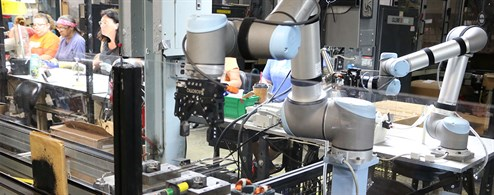

The “dirty, dull and dangerous” describe the tasks we want our ever more sophisticated robots to perform. Letting the robots do this doesn’t mean that we lazily lean back. It means we’re awarded a new drive and a new reality; the robot is man's tool for a better and less mechanical life.
The story of people working with robots is a story of humanity's conflict-ridden quest for a better world. In this context the word “robot” has both a dark and a lighter side, fear of the unknown and its enormous potential.
It is easy to be intimidated by the rapid development in robotics. The robots are regularly cast as the villains - as technology run amok depicted in science fiction with robots seeking world domination.

Quick fact: The robot is not a conscious being. It is not possible to even create one. Robots are what we build them to be, and robots do what we program them to do. Neither more nor less. But that doesn’t keep us from anthropomorphizing them..
At Universal Robots we see this on a rather harmless level when our users give the robot arms nicknames. What in reality is a useful and advanced tool is called Louis, Robert, Thelma & Louise and so on.
Thelma Louise Two Collaborative Robots At Scott Fetzer
Employees at Scott Fetzer Electrical Group in Nashville, Tennessee, named a UR5 and a UR10 robot working in tandem “Thelma & Louise”. “We were afraid they were going off a cliff, but they ended up saving us,” says Line Lead, Sebrina Thompson, reflecting on the repetitive and ergonomically unfavorable tasks now taken over by the collaborative UR robots.
At the same time, new robot types keep entering the market as the technology goes into turbo drive; our lawn mowers, cars, and vacuum cleaners have more “senses” added and become increasingly self-propelled.
The more robots that move into our daily lives, the more at ease we feel around them. When the automated version of a product no longer has the “robot” prefix, we know that it’s become the norm – it’s not a robotic vacuum cleaner anymore, it’s just a vacuum cleaner.
I developed robots before starting school. At 41, the interaction between mechanics, electronics, software and robots still occupy most of my waking hours. I was not the only one
starting early. In 300 B.C., the Romans built the world's first washing machine. The word robot is derived from the Czech robota which means “servitude” or by robotnik, which means “slave”. The word was first used in 1921 by the writer Karel Čapek in his play Rossum's Universal Robots.
When I and two fellow researchers in 2005 founded a Danish robot company, it felt obvious to name it “Universal Robots”. Our goal was to develop a completely new type of flexible, universal robotic arms targeting the small and medium sized manufacturers (SMEs).
In June 2015, the company was bought for $285M. I could, in principle, sit back and do nothing for the rest of my life. But my curiosity, my desire to create, and my ability to constantly get new ideas ensure that scenario never happens. My urge to realize these new ideas is stronger than a life of leisure.
Esben Østergaard And The Ur Robot
It think this is in the DNA of all of us. We might have developed the use of equipment, tools and more or less automated machines so we can curl up on the couch while these machines do the work. But the allure of the couch is temporary and is quickly replaced by another, quite fundamental human power: ambition.
Two other factors drive us: First one is man's primeval urge to understand himself, this is what propels robot development forward. - We strive to create robots that can do what is mastered by humans but is strenuous, repetitive and mechanical. When we reproduce ourselves as technology, it is for the same reason we construct dolls, teddy bears and other types of toys and technology. We do it basically to uncover what it is that defines us as human beings - in contrast to machines and inanimate objects.
The second factor influencing robot development is our drive. Unlike many other species mankind learned to build and use tools - not to escape the drudgery and do less, but to release resources that enable us to do more.
So what specific tasks do robots excel at? And where does it make more sense for humans to step in? That’s what I’ll focus on in the second part of this blog next week. Stay tuned.
| Ayush | Solanki | TE E&TCB |
| Atul | Tiwari | TE E&TCB |
| Jatin | Tak | TE E&TCB |
| Neel | Solanki | TE E&TCB |
| Ashutosh | Tiwari | TE E&TCB |